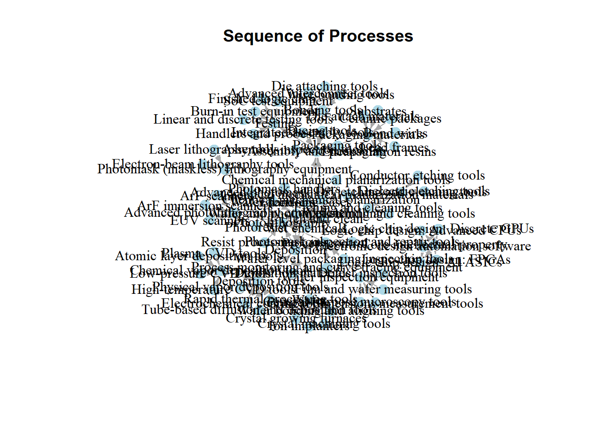
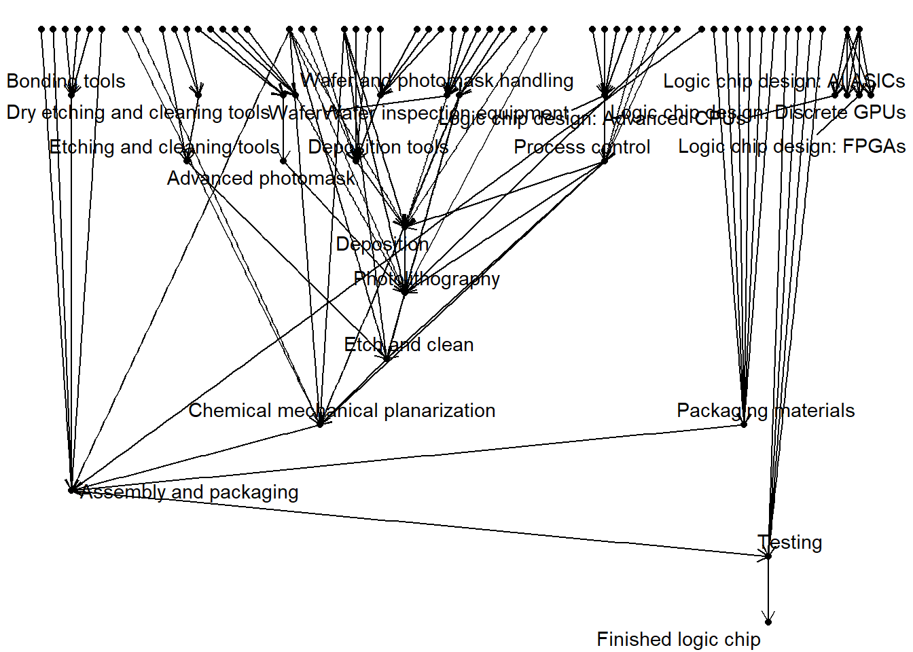
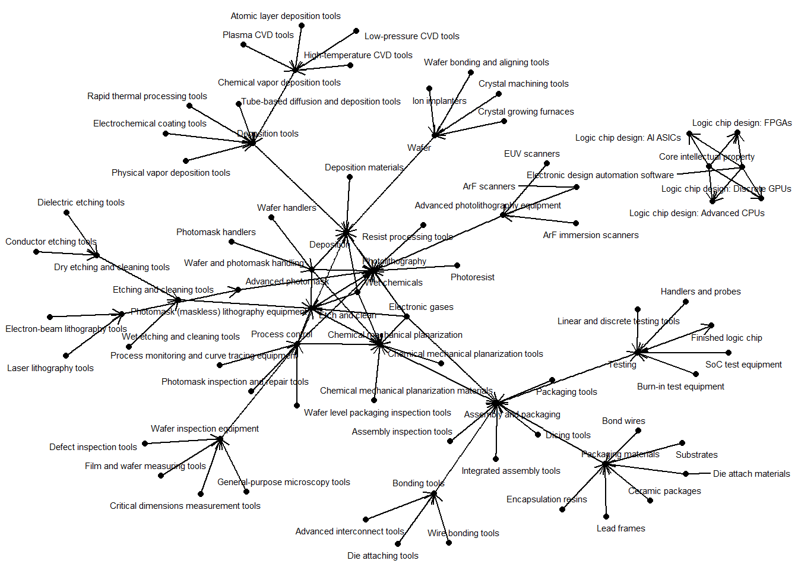
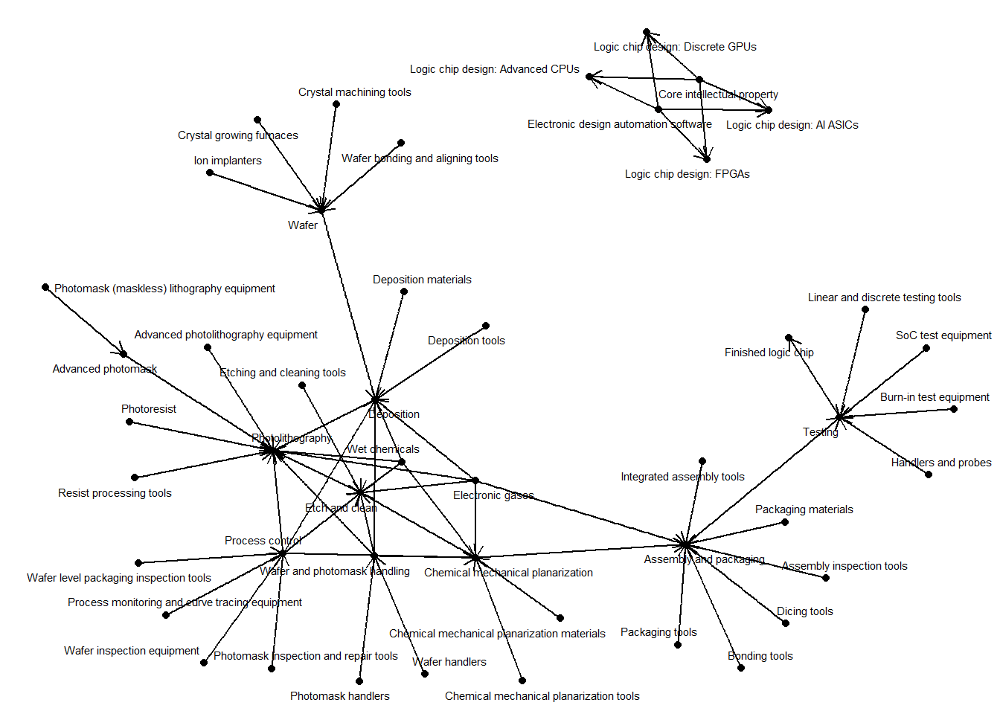
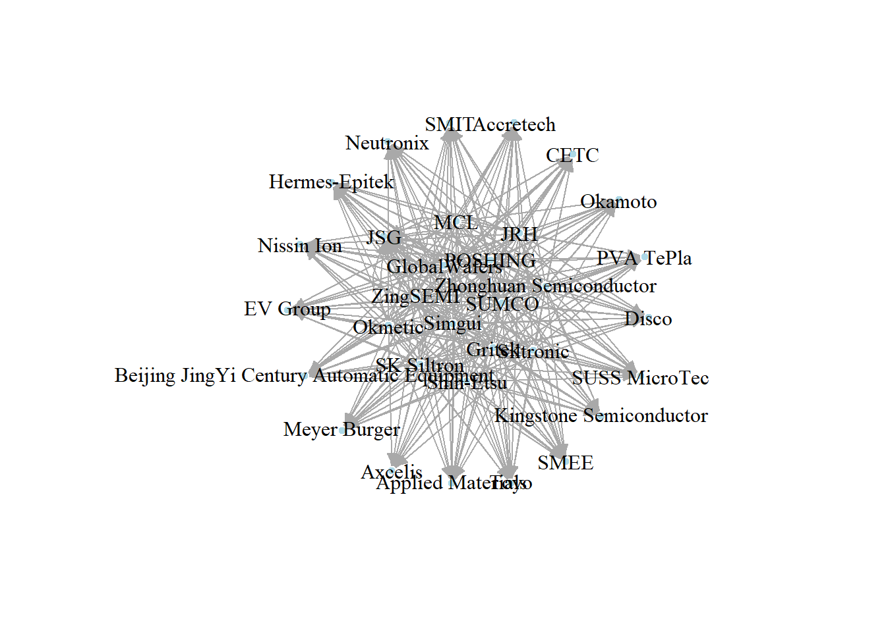
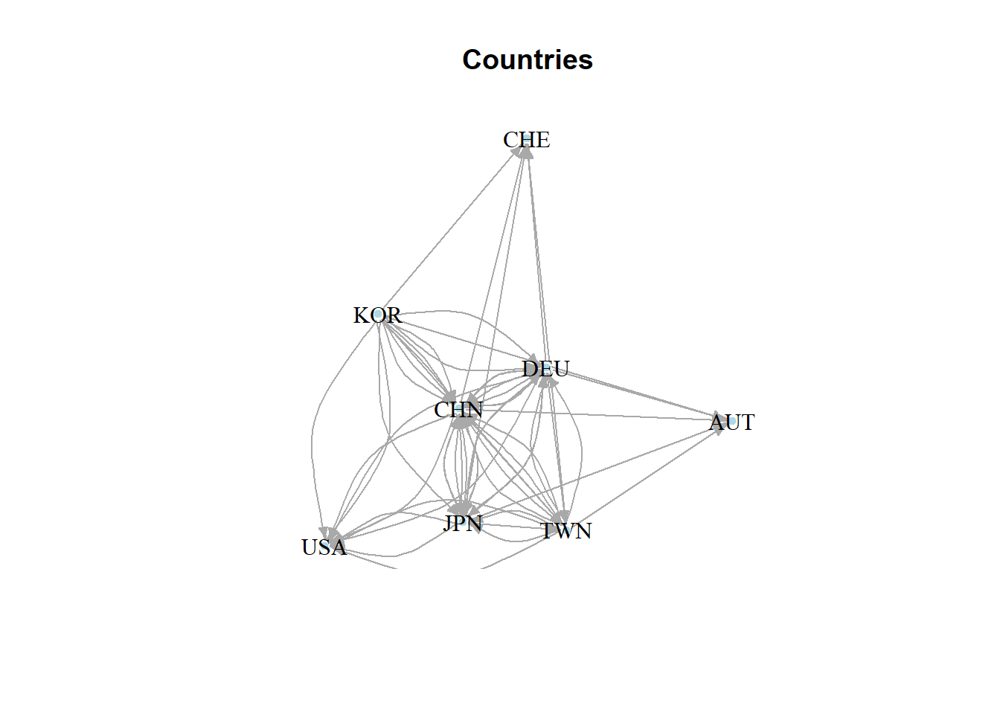
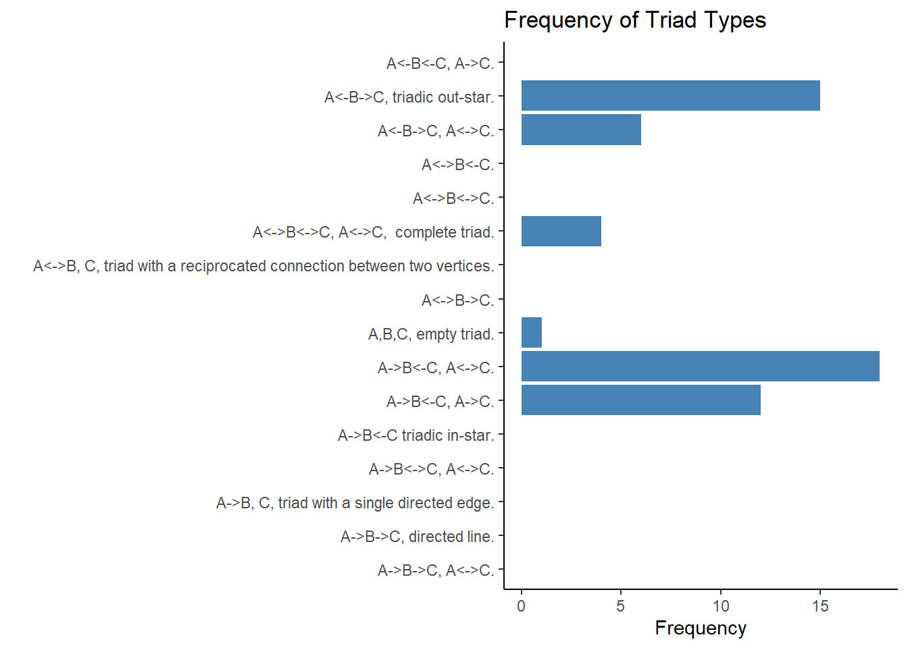
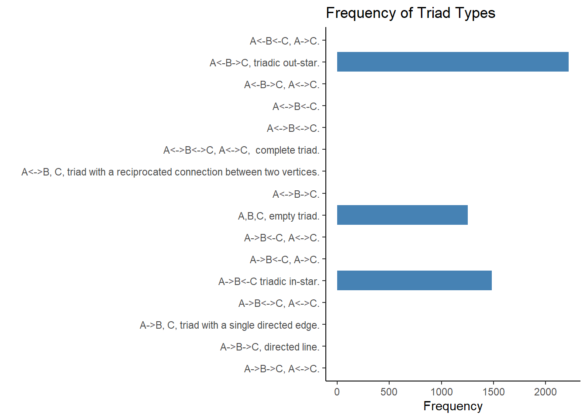
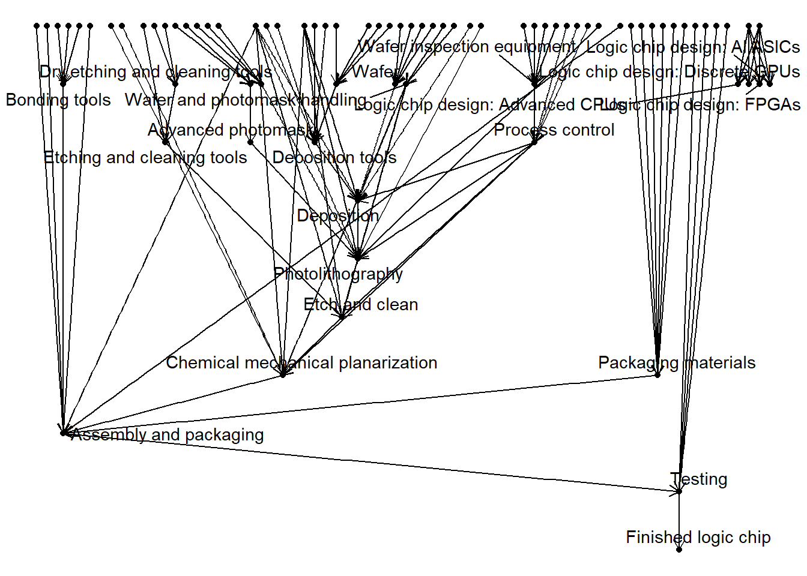

library(tidyverse)
library(igraph)
library(ggraph)Semiconductors
final_project_697
Issues with implementation
inputs <- read_csv("https://raw.githubusercontent.com/georgetown-cset/eto-supply-chain/main/data/inputs.csv")
providers <- read_csv("https://raw.githubusercontent.com/georgetown-cset/eto-supply-chain/main/data/providers.csv")
provision <- read_csv("https://raw.githubusercontent.com/georgetown-cset/eto-supply-chain/main/data/provision.csv")
sequence <- read_csv("https://raw.githubusercontent.com/georgetown-cset/eto-supply-chain/main/data/sequence.csv")
stages <- read_csv("https://raw.githubusercontent.com/georgetown-cset/eto-supply-chain/main/data/stages.csv")Foreward: I have chosen to research another topic. Ultimately, this dataset does not lend itself to the network format for reasons I will describe below. I am including the original introduction for completeness.
Introduction: The Semiconductor Supply Chain
I’m interested in the nascent Taiwan-China conflict that could potentially take the world’s most important semiconductor manufacturing off the map and result in a dramatic chip shortage.
The dataset has some details about market share by country and company, and companies also include their national origin as vertex attributes.
For research questions, I am thinking along these lines:
- What could happen in the event of a disruption to Taiwan (or anywhere in Asia’s) semiconductor manufacturing industry, and how would this affect alters?
- Could alternative sources provide what Taiwan currently offers, i.e. are there structural holes or opportunities for brokerage? [Nodes here could be firms or countries.]
- How do measures like betweenness and eigenvector centrality relate to the performance of firms, e.g. their market share?
I am also interested in the U.S. CHIPS Act:
- Is the kind of component manufacturing suggested by this legislation meaningful in the scenario of US-China conflict, or sanctions and export controls? In other words, are we subsidizing the right kinds of manufacturing, or could this just be a flashy ‘pork’ project for certain legislators to have factories built in their home districts? For example, perhaps we are too focused on creating cutting-edge silicon wafers where we are really better off manufacturing simple mechanical parts.
It might be interesting to generate an alternative version of the graph in which hypothetical sanctions and export controls are enacted against China, comparing that with the original graph.
As far as background reading, I have looked at “ON SOCIAL NETWORK ANALYSIS IN A SUPPLY CHAIN CONTEXT” which gives a pretty good background on theory. I’ll be thinking about its suggestions for nodes and ties found in its ‘CONCEPTS FOR SUPPLY NETWORKS’ section. As you can see from some of the early visualizations, I have sequence nodes mixed in with firm- and nation- nodes, so I am keen to separate them as appropriate.
Some other errata that I could capture in the project: - There are actually two components, one for the design and one for the fabrication of computer chips.
First, I will modify the sequence table so that is_type_of_name and goes_into_name are collapased into each other:
sequence_edges <- sequence %>%
mutate(goes_into_name = if_else(is.na(goes_into_name), is_type_of_name, goes_into_name)) %>%
rename(from = input_name) %>%
rename(to = goes_into_name) %>%
select(from, to)
sequence.ig <- graph_from_data_frame(sequence_edges, directed = TRUE)Resulting in a hairball if regular plotting is used:
# plot the graph
plot(sequence.ig,
vertex.label.color = "black",
vertex.color = "lightblue",
vertex.frame.color = "white",
vertex.size = 10,
edge.arrow.size = 0.5,
layout = layout.fruchterman.reingold,
main = "Sequence of Processes")
Alternately, this graph shows the process in a more understandable linear format, with Finished Logic Chip at the bottom:
ggraph(sequence.ig) +
#geom_edge_link() +
geom_edge_link2(arrow = arrow(length = unit(0.25, "cm"), type = "open")) +
geom_node_point() +
geom_node_text(aes(label = name), repel = TRUE) +
theme_void()
Finally, this is another way to visualize the sequence table:
sequence.ig %>%
ggraph(layout = "fr") +
geom_edge_link2(arrow = arrow(length = unit(0.25, "cm"), type = "open")) +
#geom_edge_link() +
geom_node_point() +
geom_node_text(aes(label = name),repel = TRUE, size = 2, color = "black") +
theme_void()
Following a suggestion, I attempted to get an all-inclusive dataframe, but it was not much help:
all_data <- providers %>%
left_join(provision, by = "provider_name") %>%
left_join(sequence, by = c("provided_id" = "input_id")) %>%
left_join(inputs, by = "input_name")
all_dataIntepreting input
Consider the graph above, and how tasks, tools, and processes are intermixed. That will make it difficult to layer firms or countries onto the graph.
The is_type_of_id column is empty for things that are already categories, while raw inputs do have it. This means that the type column is misleading.
This code makes a partition between the two:
sequence_tools <- inputs %>% select(input_id, type) %>%
right_join(sequence, by = "input_id", keep = FALSE) %>%
filter(!is.na(is_type_of_id))
sequence_categories <- inputs %>% select(input_id, type) %>%
right_join(sequence, by = "input_id", keep = FALSE) %>%
filter(is.na(is_type_of_id))I’ll make a simple edgelist and demonstrate the categories only:
sequence_categories_edges <- sequence_categories %>%
rename(from = input_name) %>%
rename(to = goes_into_name) %>%
select(from, to)
sequence_categories.ig <- graph_from_data_frame(sequence_categories_edges, directed = TRUE)
#Categories only, no tools
sequence_categories.ig %>%
ggraph(layout = "fr") +
geom_edge_link2(arrow = arrow(length = unit(0.25, "cm"), type = "open")) +
geom_node_point() +
geom_node_text(aes(label = name),repel = TRUE, size = 2, color = "black") +
theme_void()
Joining data together
Here, I do a more careful join between providers, provision, and sequence
#Joins to bring data together
# To get type provider_type (e.g. country, organization)
providers_provision <- providers %>%
inner_join(provision, by="provider_id", keep=FALSE)
#This could be a network - just countries
providers_provision_countries <- providers %>%
inner_join(provision, by="provider_id", keep=FALSE) %>%
filter(provider_type == "country")
#And just organizations (companies)
providers_provision_companies <- providers %>%
inner_join(provision, by="provider_id", keep=FALSE) %>%
filter(!provider_type == "country")
#Overlay onto the sequence 'map', companies
sequence_categories_provision <- sequence_categories %>%
left_join(providers_provision_companies, by = c("input_id" = "provided_id"), keep=FALSE)
#Overlay onto the sequence 'map', countries
sequence_categories_provision_countries <- sequence_categories %>%
left_join(providers_provision_countries, by = c("input_id" = "provided_id"), keep=FALSE)
sequence_categories_provision_countriesI want to keep the sequence data as inclusive as possible, so I will assign goes_into_id the value of is_type_of_id if it is null. This at least guarantees that there are edges between the relevant nodes, even if they are sub-categories:
sequence_collapsed <- sequence %>%
mutate(goes_into_id = if_else(is.na(goes_into_id), is_type_of_id, goes_into_id))
#Overlay onto the sequence 'map'
sequence_categories_provision_adjusted <- sequence_collapsed %>%
left_join(providers_provision_companies, by = c("input_id" = "provided_id"), keep=FALSE)
filtered_data <- sequence_categories_provision_adjusted %>% select(provider_name.x, provider_id, provided_name, input_id, goes_into_name, goes_into_id)Finally, I join the filtered_data dataframe with itself to create an edgelist where each upstream supplier is matched with each one of its downstream suppliers according to sequence.
#Join filtered_data with... itself!
edgelist <- filtered_data %>%
inner_join(filtered_data, by = c("goes_into_id" = "input_id")) %>%
filter(provider_name.x.x != provider_name.x.y) %>% # Exclude cases where FROM and TO companies are the same
select(to = provider_name.x.y, from = provider_name.x.x, provided_name.x, provided_name.y)
companies.ig <- graph_from_data_frame(edgelist, directed = TRUE)
plot(companies.ig,
vertex.label.color = "black",
vertex.color = "lightblue",
vertex.frame.color = "white",
vertex.size = 5,
edge.arrow.size = 0.5)
It looks promising, but really this looks like a nearly fully connected graph. And a lot of manufacturers are missing! What gives?
Before I examine what’s wrong, let’s have a look at degrees:
#COMPANIES
in_degrees <- degree(companies.ig, mode = "in")
out_degrees <- degree(companies.ig, mode = "out")
total_degrees <- degree(companies.ig, mode = "total")
degree(companies.ig, mode = "in") Shin-Etsu
0
SUMCO
0
GlobalWafers
0
Siltronic
0
SK Siltron
0
Okmetic
0
JRH
0
Zhonghuan Semiconductor
0
Gritek
0
MCL
0
Simgui
0
POSHING
0
ZingSEMI
0
PVA TePla
13
JSG
26
Accretech
13
Okamoto
13
Disco
13
Meyer Burger
13
Toyo
13
Beijing JingYi Century Automatic Equipment
13
Applied Materials
13
Nissin Ion
13
SMIT
13
Axcelis
13
CETC
13
Hermes-Epitek
13
Kingstone Semiconductor
13
EV Group
13
SUSS MicroTec
13
Neutronix
13
SMEE
13 node_degrees <- data.frame(node = V(companies.ig)$name, in_degree = in_degrees, out_degree = out_degrees, total_degree = total_degrees)
sorted_nodes <- node_degrees[order(-node_degrees$total_degree), ]
sorted_nodesThis definitely does not seem organic, indicating a limitation with the data.
Countries
Looking at the countries also raises questions:
set.seed(4)
filtered_data <- sequence_categories_provision_countries %>% select(provider_name.x, provider_id, provided_name, input_id, goes_into_name, goes_into_id)
#Join filtered_data with... itself!
edgelist <- filtered_data %>%
inner_join(filtered_data, by = c("goes_into_id" = "input_id")) %>%
filter(provider_name.x.x != provider_name.x.y) %>% # Exclude cases where FROM and TO companies are the same
select(to = provider_name.x.y, from = provider_name.x.x, provided_name.x, provided_name.y)
countries.ig <- graph_from_data_frame(edgelist, directed = TRUE)
plot(countries.ig,
vertex.label.color = "black",
vertex.color = "lightblue",
vertex.frame.color = "white",
vertex.size = 5,
edge.arrow.size = 0.5,
main = "Countries")
Likewise, the distribution of degrees makes some sense, but leaves a lot out of the picture and is perhaps incorrect:
#COUNTRIES
# Calculate the in-degree, out-degree, and total degree of each node
in_degrees <- degree(countries.ig, mode = "in")
out_degrees <- degree(countries.ig, mode = "out")
total_degrees <- degree(countries.ig, mode = "total")
degree(countries.ig, mode = "in")KOR JPN TWN DEU CHN CHE USA AUT
0 8 4 8 16 5 10 5 # Create a data frame with node names and their corresponding degrees
node_degrees <- data.frame(node = V(countries.ig)$name, in_degree = in_degrees, out_degree = out_degrees, total_degree = total_degrees)
# Sort the nodes by total degree in descending order
sorted_nodes <- node_degrees[order(-node_degrees$total_degree), ]
# Print the sorted nodes
sorted_nodesHere are a few visualizations of the frequencies of triad types for these networks:
triad_chart_func <- function(data) {
triad_data <- igraph::triad_census(data)
triad_types <- c(
'003' = 'A,B,C, empty triad.',
'012' = 'A->B, C, triad with a single directed edge.',
'102' = 'A<->B, C, triad with a reciprocated connection between two vertices.',
'021D' = 'A<-B->C, triadic out-star.',
'021U' = 'A->B<-C triadic in-star.',
'021C' = 'A->B->C, directed line.',
'111D' = 'A<->B<-C.',
'111U' = 'A<->B->C.',
'030T' = 'A->B<-C, A->C.',
'030C' = 'A<-B<-C, A->C.',
'201' = 'A<->B<->C.',
'120D' = 'A<-B->C, A<->C.',
'120U' = 'A->B<-C, A<->C.',
'120C' = 'A->B->C, A<->C.',
'210' = 'A->B<->C, A<->C.',
'300' = 'A<->B<->C, A<->C, complete triad.'
)
names(triad_data) <- triad_types
triad_data <- data.frame(triad_data)
triad_data$triad_type <- row.names(triad_data)
ggplot(triad_data, aes(x = triad_type, y = triad_data)) +
geom_bar(stat = "identity", fill = "steelblue") +
coord_flip() +
labs(x = "", y = "Frequency",
title = "Frequency of Triad Types") +
theme_classic()
}Countries
triad_chart_func(countries.ig)
Companies
triad_chart_func(companies.ig)
Why I’m picking another dataset
Consider again this graph:
ggraph(sequence.ig) +
#geom_edge_link() +
geom_edge_link2(arrow = arrow(length = unit(0.25, "cm"), type = "open")) +
geom_node_point() +
geom_node_text(aes(label = name), repel = TRUE) +
theme_void()
The sad fact is that nearly all of the companies and countries in this dataset are among those ‘top’ level nodes. After two layers deep, the ‘edges’ I would rely on between between companies or countries start to be between things like ‘Process Control’ and ‘Chemical mechanical planarization’, and so on. That is why I only get 30-something nodes among companies while I should have hundreds.
If I got rid of the process nodes entirely and just kept the prime top-level nodes, I would get a very uninteresting network. Keep in mind that values in the sequence data were arbitrarily created by the Emerging Technology Observatory and do not reflect actual observations or physical constraints on companies:
I feel that my artisinal overlaying of countries and firms onto sequence is either outside of the scope of regular social network analysis, or not applicable at all. Things like structural holes, centrality, and network statistics would not apply, and I’m therefore skeptical of the project.
I would like to use my final examination to learn more about classical social network analysis, so I will (pending feedback) be changing to another topic, likely Congressional stock trading with data from the STOCKS Act.